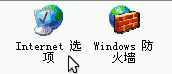
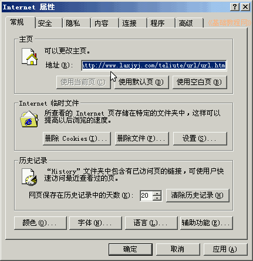
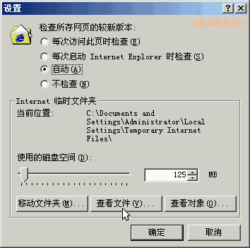
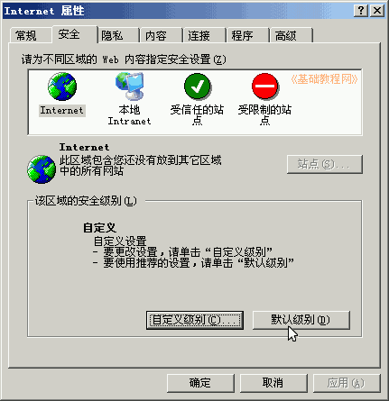
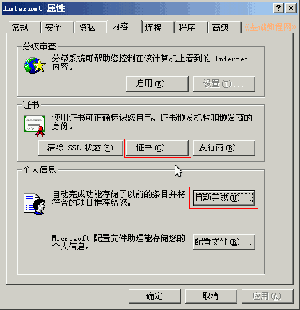
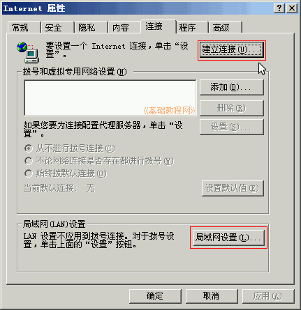
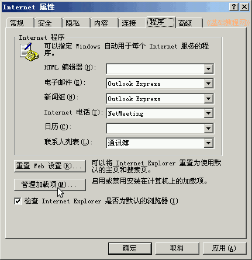
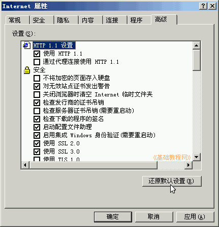

控制面板基础教程
作者：TeliuTe 来源：基础教程网
Internet 选项用于IE浏览器，主要设置上网浏览相关，下面我们来看一个练习；
1、Internet 选项
1）进入经典视图，点第一个“Internet 选项”，出来一个面板；

2）这个选项面板，与在浏览器里点“工具-Internet 选项”菜单是一样的；

2、设置选项
1）在第一个“常规”标签里，可以设置主页，删除上网记录，点“设置”还可以查看和设置上网的临时文件；

2）在第二个“安全”标签里，点“自定义”可以设置哪些网页元素可以显示，拿不准就点旁边的“默认级别”；

3）“隐私”标签不需要设置，在“内容”标签里，可以备份个人的证书，如网银证书等，还可以清除自动完成的网上搜索记录；

4）在“连接”标签里，可以建立宽带连接，设定自动连接，还可以点“局域网设置”，通过代理上网；

5）在“程序”标签里，可以管理浏览器加载的ActiveX控件，从而加快浏览器运行速度；

6）在“高级”标签里，主要是一些安全相关的设置，根据需要进行设定，改乱了可以点“还原默认值”；

本节学习了设定Internet选项的基础知识，如果你成功地完成了练习，请继续学习下一课内容；
本教程由86团学校TeliuTe制作|著作权所有
基础教程网：http://teliute.org/
美丽的校园……
转载和引用本站内容，请保留作者和本站链接。